To Numpy
Chapter Goals:
• Learn how to convert a DataFrame to a NumPy matrix
• Write code to modify an MLB dataset and convert it to a NumPy matrix
~~~~~~~~~~~~~~~~~~~~~~~~~~~~~~~~~
Machine LearningThe DataFrame object is great for storing a dataset and performing data analysis in Python. However, most of the machine learning frameworks (eg TensorFlow), work directly with NumPy data. Furthermore, the NumPy data used as input to machine learning models must solely contain quantitative values.
Therefore, to use a DataFrame's data with a machine learning model, we need to convert the DataFrame to a NumPy matrix of quantitative data. So even the categorial features of a DataFrame,such as gender and birthplace, must be converted to quantitative values.
~~~~~~~~~~~~~~~~~~~~~~~~~~~~~~~~~
Indicator FeaturesWhen converting a DataFrame to a Numpy matrix of quantitative data, we need to find a way to modify the categorial features in the DataFrame.
The easiest way to do this is to convert each categorial feature into a set of indicator features for each of its categories. The indicator feature for a specific category represents whether or not a given sample belongs to that category.
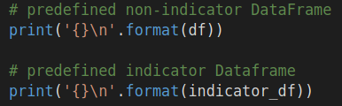 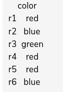 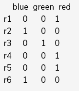
In the code above, the DataFrame
df has a single categorical feature called
Color. The corresponding indicator features for
Color are shown in
indicator_df.
Note that an indicator feature contains
1 when the row has that particular category, and
0 if the row does not.
~~~~~~~~~~~~~~~~~~~~~~~~~~~~~~~~~
Converting to indicatorsIn pandas, we convert each categorical feature of a DataFrame to indicator features with the
get_dummies function. The function takes in a DataFrame as its required argument, and returns the DataFrame with each of its categorical features converted to indicator features.
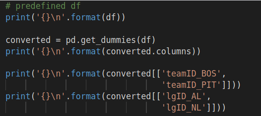 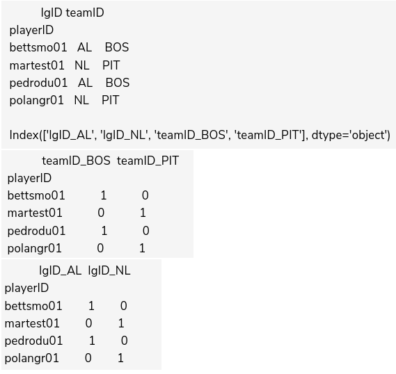
Note that the indicator features have the original categorical feature's label as a prefix. This makes it easy to see where each indicator feature originally came from.
~~~~~~~~~~~~~~~~~~~~~~~~~~~~~~~~~
Converting to NumPyAfter converting all the categorical features to indicator features, the DataFrame should have all quantitative data. We can then convert to a NumPy matrix using the
values function.
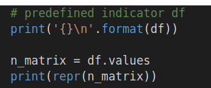 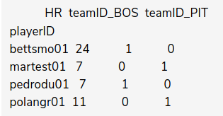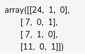
The rows and columns of the output matrix correspond to the rows and columns of the same position in the DataFrame. In the code above, the first column of the NumPy matrix represents
HR, the second column represents
teamID_BOS, and the third column represents
teamID_PIT.
~~~~~~~~~~~~~~~~~~~~~~~~~~~~~~~~~
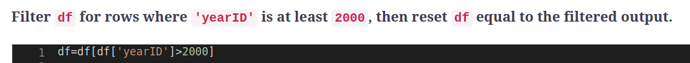
~~~~~~~~~~~~~~~~~~~~~~~~~~~~~~~~~
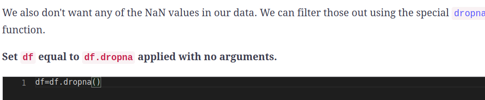
~~~~~~~~~~~~~~~~~~~~~~~~~~~~~~~~~
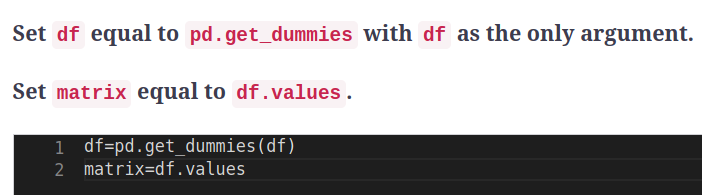